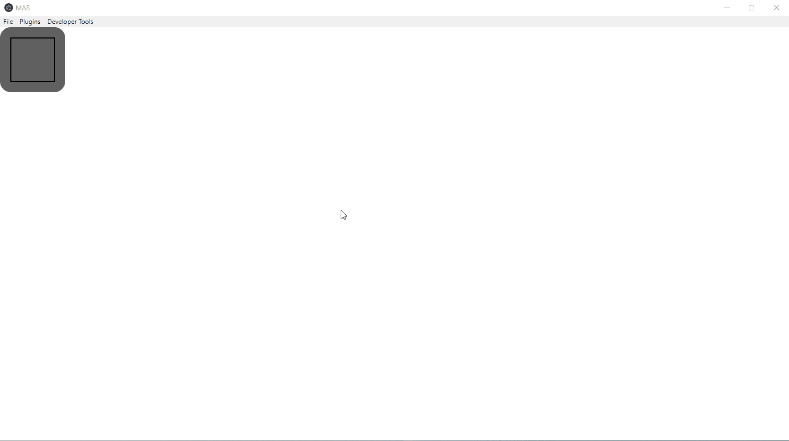
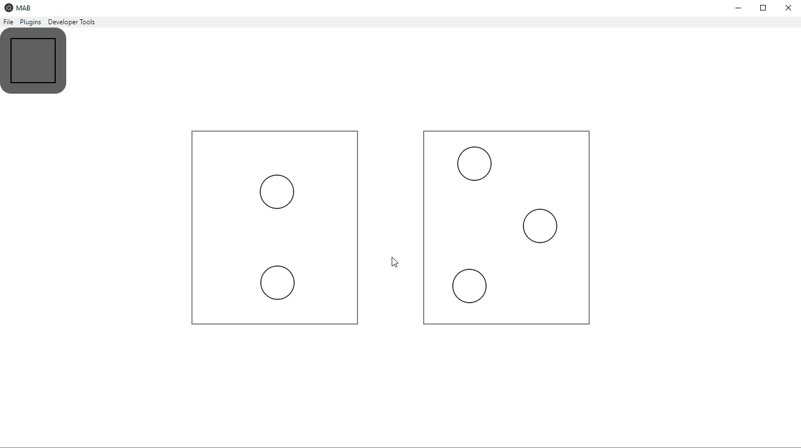
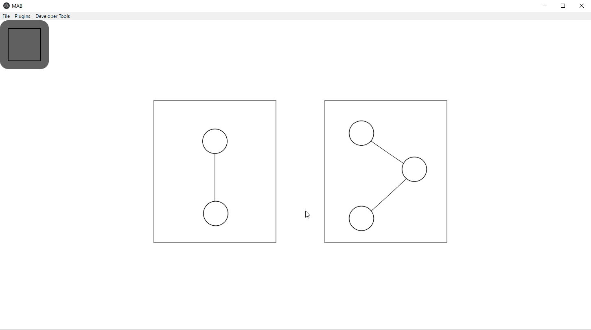
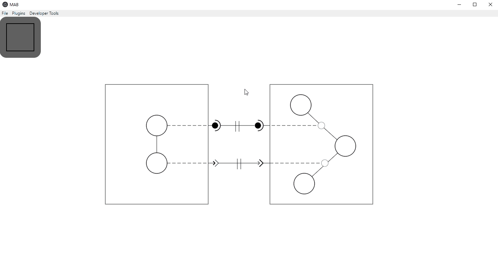

Welcome to MAB's User Manual
How To Create New Components
- Click and hold on the create new component button in the top left
hand corner of the MAB workspace.
- Drag and drop your newly created component at any location you
like.
- To move a component: click and drag.
- To resize a component: left click the component in question, use
the provided handles to resize the component to your desire.

How To Create New Places
- Double click inside the desired component at the location you would
like the new place to reside.
- To move a place: click and drag.
How To Create Transitions Between Places
- Left click the origin place you would like the transition to
start from.
- Right click the destination place you would like the transition
to end at.
NOTE: There is an index associated with every place that does not allow for
the creation of self loops or any sort of cycle to be created with transitions
inside of any component. If MAB thinks you are trying to create a cycle inside
the component of any kind, the destination place will highlight red.

How To Create Dependency's
PROVIDE dependencies:
- Left click the origin place you wish the dependency to protrude from.
- Right click the RIGHT side of the same component (the right side of the
component will highlight green).
- Select the type of dependency you wish to create in the new dialog popup.
USE dependencies:
- Left click the origin transition you wish the dependency to protrude from.
- Right click the LEFT side of the same component (the left side of the
component will highlight green).
- Select the type of dependency you wish to create in the new dialog popup.

How To Create Connections Between Depencencies
- Left click the PROVIDE dependency you wish to start a connection at.
- Right click the USE dependency of the same type you with to end
the connection at.
NOTE: You can only create connections between dependencies of the same type.
i.e. Data -> Data or Service -> Service.
How To Edit Objects in MAB
- Right click the object in question.
- Edit the fields in the corresponding dialog box.
How To Generate Your Assemblies Diagram into Functioning MAD Code
- Select "Generate Code" from the Plugin dropdown.
- Save all the newly created files.
NOTE: There should be one more file than the number of components that need
to be saved. i.e. 4 components would equate to 5 files that need to be saved.
How To Simulate Your Assemblies Deployment
- Select "Simulate Deployment" from the Plugin dropdown.

How To Save Your Assembly
- Select "Save Assembly" from the Plugin dropdown.
- Name and save your assembly in the new dialog box.
How To Load Your Assembly
- Select "Load Assembly" from the Plugin dropdown.
- Select your saved assembly in the new dialog box.